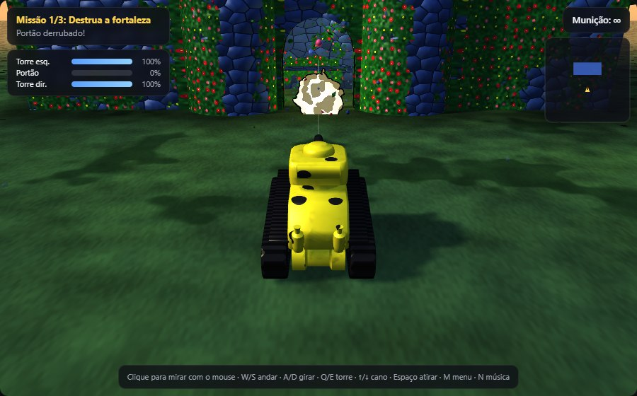
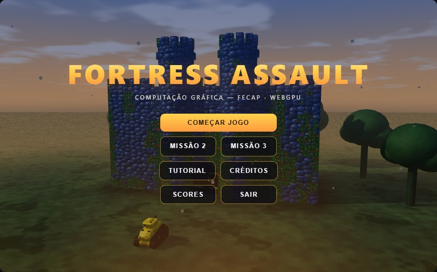
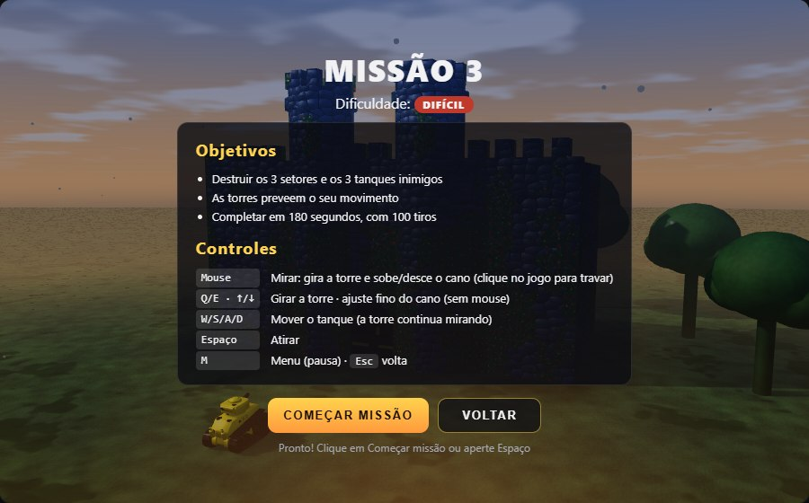
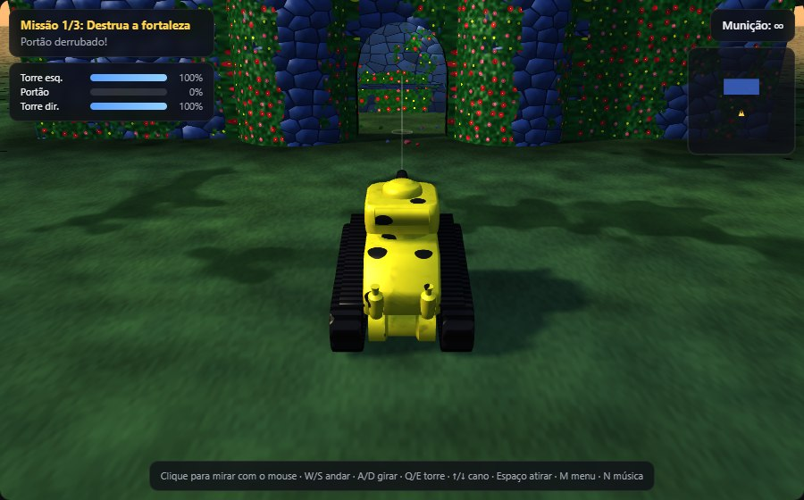
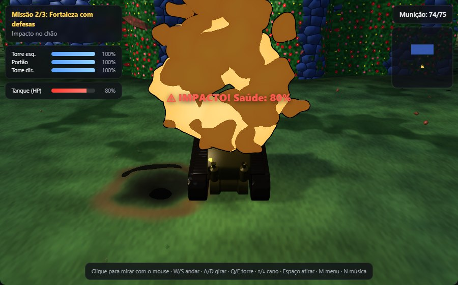
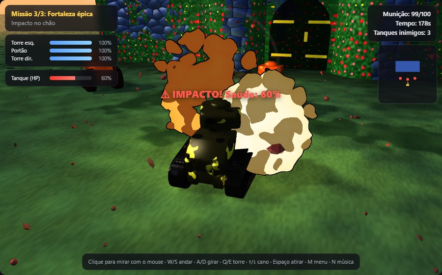
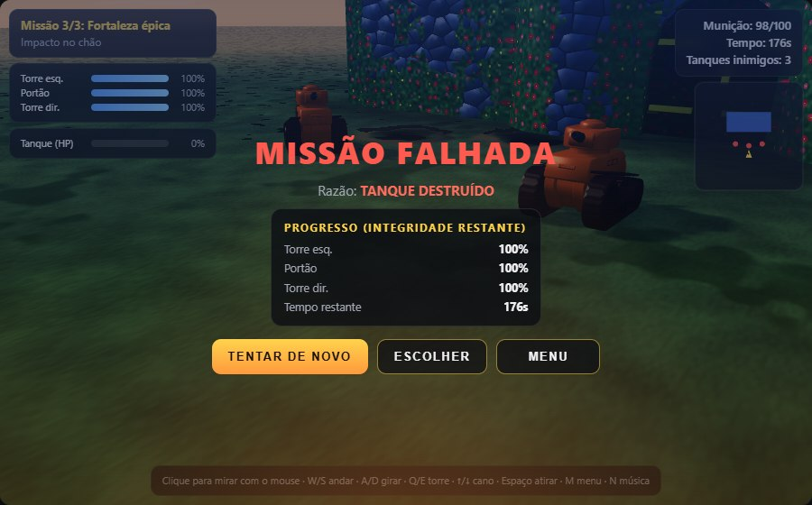

FORTRESS ASSAULT
Jogo de tanque em 3D cartunizado · Computação Gráfica — FECAP
Objetivo do projeto
Jogo de tanque em 3D cartunizado, renderizado com WebGPU: destruir a fortaleza a tiros de canhão.

Estilo: 3D cartunizado
Cenário e modelos em 3D de verdade, com visual de desenho animado: explosões com contorno preto e cores chapadas, tanque amarelo com pintas de onça, flores vibrantes e cores saturadas.Tecnologias
- WebGPU + WGSL: toda a renderização (iluminação, sombras, castelo destrutível, explosões)
- Tone.js: som sintetizado em tempo real
- JavaScript (módulos ES), sem engine nem three.js
O que foi entregue
- 3 missões progressivas, com menu, HUD e minimapa
- Castelo destrutível em qualquer ponto (buracos recortados no shader)
- Explosões 3D: fogo (shader externo), 60 partículas, luz dinâmica
- Torres que desmoronam, buracos que crescem, crateras no chão
- Mira no mouse com torre independente; ranking e recordes
- Som: explosão, tiro, impacto, alerta e música
O jogo funcionando
Capturas reais do jogo rodando no Chrome com WebGPU (~60 fps)






Registro de uso de IAs
Prompts, respostas e etapas utilizadas: cada prompt vira uma entrada em docs/ai-log.md
| # | Data | Prompt (resumo) | Resultado | Arquivos |
|---|---|---|---|---|
| 1 | 28/09 | Organizar o protótipo: módulos, git, README, CLAUDE.md | Refatorado sem mudar o jogo (4 capturas idênticas pixel a pixel) | src/*.js |
| 3 | 28/09 | Portar o shader "Cartoon explosion" (Shadertoy) para WGSL | Shader WGSL + billboard 3D; ≤ 0,03% de diferença do GLSL | explosion.js |
| 17 | 04/10 | Comparar Claude × Gemini × ChatGPT na conversão do shader | Três códigos compilados e testados | analise-ias.md |
| 23 | 04/10 | Menu e 3 missões com progressão | Missões, HUD, inimigos; 22 → 54 fps | missions.js |
| 24 | 05/10 | Explosão 3D com partículas, luz dinâmica e som | ParticleEmitter, luzes no shader, Tone.js | explosion-*.js |
| 32 | 05/10 | Buraco que cresce, crateras, torre que desmorona | Corte no shader + colisão; mesmo fps | trench.js |
| 36 | 05/10 | Mira no mouse com torre independente | Torre separada do modelo glTF; tiro segue a torre | tank.js |
Erros e correções
Bugs reais do jogo: o que aconteceu, por quê, e como foi resolvido
Shader externo com bugs
ProblemaAo portar a explosão do Shadertoy, o código original lia uma 5ª cor numa paleta de 4 e dividia por zero no 1º quadro.
CausaRuído entre 0,75 e 1 gerava índice 4; em t = 0, repeat era 0.
Soluçãoclamp no índice e repeat ≥ 0.001; comparado com o GLSL original em WebGL2.
2º tiro não atravessava
ProblemaAtirar de novo no mesmo buraco batia num "fundo" de parede invisível.
CausaO tiro desce inclinado e sai ~0,87 abaixo de onde entrou, fora do buraco centrado na entrada.
SoluçãoCentro do buraco onde a trajetória cruza o meio da espessura do muro.
Tanque preso na brecha
ProblemaO buraco parecia grande o bastante, mas o tanque travava ao tentar entrar no castelo.
CausaO eixo do buraco seguia a inclinação do tiro: a abertura saía mais baixa atrás e deixava uma "aba" invisível.
SoluçãoEixo sempre horizontal, buraco oval e o tanque sobe bordas de até 0,7.
Jogo travando em combate
ProblemaA missão 3 caía para 22 fps quando havia explosões perto da câmera.
CausaMedido desligando partes: o contorno preto recalculava a explosão 4× por pixel.
SoluçãoContorno pela derivada de tela (fwidth) do valor já calculado.
Cores da explosão sumindo
ProblemaAs fases laranja e vermelha quase não apareciam, e mais turbulência derrubou para ~35 fps.
CausaA bola de fogo some na metade da vida e a fumaça, marrom fixa, dominava.
SoluçãoFumaça segue a cor da fase (phaseColor); ruído fBm com 2 oitavas.
docs/ai-log.md e um commit explicando o problema e a correção.Problemas de shader (WGSL)
Erros que apareceram nos shaders de vértice e de fragmento, e como foram corrigidos
Explosão cortada pela parede
ProblemaSó a metade de baixo da onda de choque aparecia; no portão, o arco escondia o topo da bola de fogo.
CausaO quad billboard fica de frente para a câmera; vista do alto, a metade de cima "deita" dentro do muro e o teste de profundidade a esconde.
SoluçãoNo vertex shader, o centro do quad é puxado 0,8 na direção da câmera.
Pátio todo escuro
ProblemaCom as sombras ligadas, o chão dentro do castelo ficava quase preto.
CausaO fragment shader do chão escurece perto da muralha pela distância até o castelo, que é negativa dentro do pátio: o chão inteiro contava como "colado na parede".
Soluçãoabs() na distância e luz ambiente quente no pátio.
Fachada pesada demais
ProblemaCom o castelo ocupando meia tela, o jogo caía para 25–39 fps.
CausaO fragment shader da fortaleza calculava ~11 gradient noise 3D por pixel para pedra, hera e manchas.
SoluçãoValue noise 2D barato (4 hashes) nos padrões; o ruído caro só na borda dos buracos.
Jogo não carregava
ProblemaTela parada com o erro "Cannot access 'TOWERS_WGSL' before initialization".
CausaO código WGSL dos buracos é montado em JS e passou a usar as constantes das torres, declaradas mais abaixo no arquivo.
SoluçãoDeclaração das constantes movida para antes do shader que as usa.
Uniform buffer desalinhado
ProblemaO código da explosão gerado pelo Gemini era rejeitado pelo WebGPU.
CausaEm WGSL, vec3f alinha em 16 bytes: o buffer tinha 192 bytes para uma struct de 208.
SoluçãoNo nosso port, buffer de 112 bytes com cada vec3f seguido de um f32.
lighting.js), céu (sky.js), linha de mira (aimLine.js) e explosão (explosion.js, shader externo adaptado).O mesmo prompt em 3 IAs
Claude, Gemini e ChatGPT receberam o mesmo pedido: converter o shader de explosão de GLSL para WGSL
Tenho este shader de explosão, originalmente publicado no Shadertoy (X3dGz2), nesta versão portada para a Godot, licença CC BY-NC-SA 3.0:
Preciso adaptar esse shader para WGSL (linguagem de shaders do WebGPU), para usar como efeito de explosão num jogo 3D, aplicado sobre um quad voltado para a câmera, posicionado no ponto de impacto de um projétil.
Por favor:
- Converta para WGSL, removendo as partes específicas do Godot e mantendo o efeito visual o mais parecido possível.
- Explique as principais mudanças de sintaxe/conceito entre GLSL e WGSL.
- Indique como eu passaria o tempo e a posição do impacto como uniforms numa aplicação WebGPU em JavaScript.
Como comparamos (sem confiar só na leitura)
- Código extraído sem alterações das 3 respostas (
docs/Resposta 1 *.txt) - Compilado no Chrome com WebGPU (
getCompilationInfo()) - Executado ao lado do GLSL original (WebGL2), mesmos parâmetros, em 5 instantes da animação
- % de pixels diferentes do original medida em cada instante
- Afirmações da explicação testadas compilando trechos mínimos de WGSL
Condições
Claude Code trabalhou dentro do projeto, com ferramentas para compilar e testar; Gemini e ChatGPT responderam só no chat. Por isso a comparação olha o shader convertido, e não a integração ao jogo.Claude × Gemini × ChatGPT: mesmo prompt
O que cada IA entregou para o prompt anterior, medido rodando o código e comparando pixel a pixel com o shader original
- Compila e roda de primeira
- Fez o vertex shader do billboard e o buffer de 112 bytes
- Protegeu divisão por zero em
t = 0 - Único que testou o resultado contra o original
- Disse que
repeatepointeram palavras reservadas: falso
- Deixou os parâmetros ajustáveis por uniform
- Buffer rejeitado pelo WebGPU: 192 bytes para uma struct de 208
- Explosão com metade do tamanho e sem o contorno preto
- Sem vertex shader nem posição 3D do impacto
“Literais flutuantes exigem ponto decimal (1.0 em vez de 1.)” → falso: 1. compila
- Compila e roda (com aspect = 1)
- Explicação mais didática: antes → depois e diagramas
- Uniforms bem separados (efeito × câmera)
- Proporção pelo canvas achata a explosão no quad
- Não disse como tratar a transparência (blending)
“posição do impacto no mundo 3D → responsabilidade do vertex shader; pos 2D e tempo → usados pelo fragment shader” → separação correta e bem explicada
| t | 0,15 s | 0,35 s | 0,60 s | 0,90 s | 1,20 s |
|---|---|---|---|---|---|
| Claude | 0,00% | 0,00% | 0,02% | 0,03% | 0,00% |
| Gemini | 21,15% | 31,45% | 20,96% | 11,61% | 1,19% |
| ChatGPT | 0,00% | 0,00% | 0,02% | 0,03% | 0,00% |
Origem do shader e adaptações
Shader externo: "Cartoon explosion", Shadertoy X3dGz2 → WGSL
Licença: CC BY-NC-SA 3.0 (adaptação sob a mesma licença)
Onde:
src/explosion.js, com fonte e adaptações no cabeçalho

Adaptações realizadas
- GLSL/Godot → WGSL; quad billboard 3D gerado no vertex shader
modreimplementado (o%do WGSL trunca)- Uniforms com valor padrão →
const(WGSL não tem default) clampno índice da paleta;repeat ≥ 0.001discardno lugar de blending- Contorno por
fwidth: ~5× menos trabalho (22 → 54 fps) - Duração 1,3 s → 2,5 s
- Cores em 5 fases: branco → amarelo → laranja → vermelho → preto
- Turbulência fBm Perlin 3D, 2 oitavas (realismo × desempenho)
- Uniform buffer de 112 bytes, alinhado (
vec3f+f32)
Funcionamento estável
App pronto para a apresentação
Jogo
- Menu FORTRESS ASSAULT, tutorial, créditos, pausa
- Missão 1: sem defesa, munição ∞
- Missão 2: torres atiram de volta, 75 tiros
- Missão 3: 3 tanques inimigos, 100 tiros, 180 s
- Mouse: mira (torre gira sozinha + cano) · W/S/A/D com inércia
- HUD: integridade, munição, tempo, avisos, minimapa
- Briefing, transições, ranking por missão e recordes salvos
- Buracos que crescem, torres que desmoronam, crateras no chão
Efeitos e som
- 60 partículas por explosão (cubos, esferas, octaedros), gravidade −9,8, rotação, somem em 3–5 s
- Luz pontual por explosão: RGB (1.0, 0.7, 0.2), 2,0 → 0 em 2,5 s, raio 20
- Som: explosão (ruído marrom + boom descendente), tiro D5, impacto A2, alerta C6 aos 30 s, música (C – G – Am – Em)
✅ As 3 missões vencidas até o fim nos testes automatizados, sem erros no console
Documentação e código
Onde encontrar cada parte do projeto
Documentos no repositório
- README.md: como rodar, controles, estrutura e créditos
- CLAUDE.md: regras do projeto para a IA
- docs/ai-log.md: 26 entradas cronológicas
- docs/analise-ias.md: comparação testada entre as IAs
- docs/DEVELOPMENT_REPORT.md: relatório técnico (arquitetura, shaders, desempenho, testes)
- docs/COMO_RODAR.md: como rodar no VS Code em outro computador
docs/Resposta 1 Gemini.txt/ChatGPT.txt: respostas originais
No código e no git
- Código comentado; fonte e licença no cabeçalho do shader externo e do modelo 3D
- Commits com mensagens explicando problema e correção
- Tags de versão estável para voltar em caso de problema
- Repositório: github.com/GiuNogueiraSa/fortress-assault
- Jogar online: giunogueirasa.github.io/fortress-assault
Obrigado!
Fortress Assault — Computação Gráfica, FECAP — 05/10/2026
Equipe
- Professor: Adriano Felix Valente
- IAs: Claude (principal), Gemini e ChatGPT (comparação)
Fontes externas
- Shader "Cartoon explosion", Shadertoy X3dGz2 (versão Godot por RayL019), CC BY-NC-SA 3.0
- Modelo 3D "Tank", Willy Decarpentrie (Sketchfab), CC BY 4.0
- Tone.js v14.8.49, licença MIT
- WebGPU: API do navegador (Chrome)